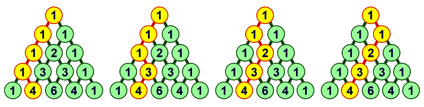

The Pascal's Triangle (aka Chinese Triangle) was named after French mathematician, physicist, inventor, writer and religious philosopher Blaise Pascal (1623-62).
The number at the top row (the point) of a Pascal's Triangle is 1. More numbers are placed in rows to form a triangular pattern. The numbers at the start and at the end of each row are all 1. Each other number inside the triangle is the sum of the two numbers above it. Start with 0 when refering to rows from the top vertex to the base and start with 0 when refering to the numbers (cells or columns) in each row from left to right.
Symmetrical
Dividing the Pascal's Triangle from the top vertex to the base with a line of symmetry creates two right angled triangles. The numbers (nodes) on the left triangle have symmetrical matching numbers (nodes) on the right triangle.
Possible Grid Paths
The count of possible grid paths from the top node to a given node corresponds to the value of that given node. As illustrated in the image below, there are four different possible ways from the top node to the node with the value of 4
